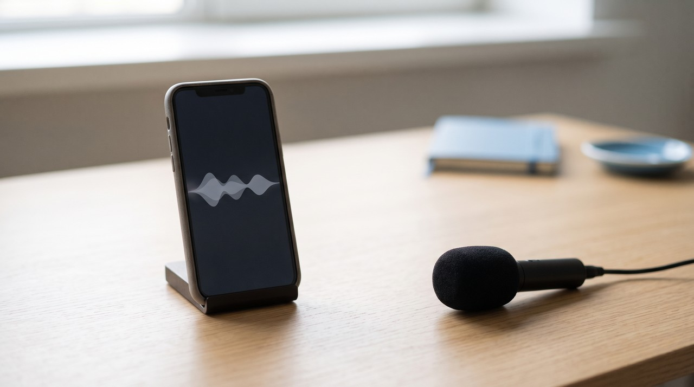
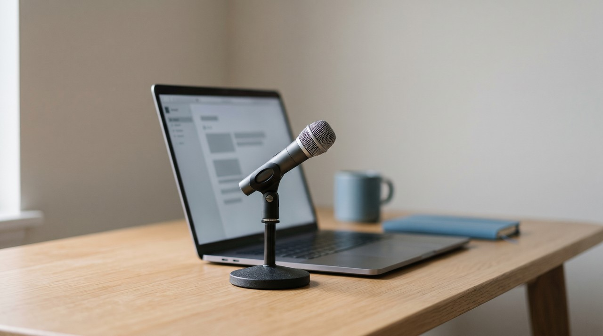

CapCut voice clone: free and quick, but read what its terms let CapCut do with your voice

If you use CapCut, you can clone your voice right in the app. You just record a sentence or two in the Custom voices section, and the app builds an AI voice you can use for text to speech. Your recording is considered User Content under CapCut's terms, which were updated on 15 April 2026. CapCut says it does not own your content, but its terms give the company a perpetual, worldwide, sublicensable licence to use it, and section 15 says this permission continues even if the terms end.
| CapCut custom voice | VoiceClone | |
|---|---|---|
| Price | Free app, some AI features carry a Pro label | One voice free, then $49 one time |
| How much you record | A sentence or two, read into the app | 1 to 3 minutes of clean speech |
| Where your recording goes | CapCut's servers, stored in Malaysia, Singapore and the United States | Stays on your PC, nothing uploaded |
| Rights over your recording | You keep ownership, CapCut gets a perpetual, worldwide, sublicensable licence | Nobody else gets any rights |
| Languages | 15, per CapCut's tool page | English |
| Works offline | No | Yes |
| Runs on | Phone, desktop app and web | Windows 10 or 11 |
Written by Inam. One honest note first: VoiceClone, in the second column, is my own app, so I have a side in this. You can see the rest of my engineering work on designesh.com. Last updated 21 October 2026.
You might edit your videos in CapCut and notice it can read your script in your own voice. You record a line or two and wait a few minutes, and then you have a text to speech voice that sounds like you. This is very convenient if you already cut your videos in CapCut, because the generated audio goes straight onto your video timeline.
Most people skip over what happens to the recording after they make it. Your voice sample is User Content under CapCut's terms, and those terms give CapCut a perpetual, worldwide, sublicensable licence to use that User Content. This does not mean the company owns your voice. I will show you the exact wording later, but it is a bigger permission than people usually expect to give for a free voice feature.
How does voice cloning in CapCut work?
CapCut calls this feature custom voices. You can see how it works in SlashGear's walkthrough. You open your project and tap Audio and then Custom voices, and you press the plus button to read one or two sentences out loud. A loading screen shows up for a few minutes while the app makes the voice, and then it puts your new voice next to the regular text to speech options.
You can read CapCut's custom AI voice page where it says the tool learns your tone and speech pattern from your upload. It also says the text to speech supports 15 languages and 350 plus tones. The FAQ says you can use the generated audio commercially. The page does not make it clear if custom voices are free or if they need a Pro account in every country, so you should check your own app for the shiny Pro label before you plan your whole channel around this tool.
I should mention a real limit to this process. One or two sentences is a very small amount of audio for a voice clone. The result gets the general sound of your voice right, but it does not copy your pacing or your pauses or how you stress your words. Every fast cloning tool makes this same trade, and I explain why in instant vs professional voice cloning.
What do CapCut's terms say about your voice recording?
The CapCut Terms of Service were updated on 15 April 2026. When you accept them, you agree with Bytedance through its company in Singapore. Section 10 says you give CapCut "a non-exclusive, royalty-free, transferable, sub-licensable, perpetual and worldwide license to use your User Content." This means the company is allowed to modify, adapt, reproduce, display, publish and make derivative works of your content so it can operate, develop and provide its services.
Non-exclusive is a legal word that just means you can still use your own recording in other places. Sublicensable means CapCut can give the same permission to other companies it works with, and perpetual means the permission never expires. Section 15 says these rights survive the termination of the terms, so you do not take back your permission if you delete your account. The licence section also gives CapCut a licence to your username, image and likeness. It asks you to waive your rights of publicity if your local law allows it, and this is the right that normally prevents a company from using your identity for promotion.
I want to be fair to CapCut here, because the same section says "We don't own your User Content." The terms do not actually name voice cloning or custom voices, so a voice recording is covered under the rules for any audio you upload. I see many posts online quoting the June 2025 version to talk about voice and face rights, but the April 2026 text I read today just says image and likeness instead of voice. CapCut gives people in the United States a separate CapCut US Terms of Service, so you should read the terms for your own country.
Where does CapCut keep your voice?
The CapCut Privacy Policy was also updated on 15 April 2026. It says CapCut stores your information on servers in Malaysia, Singapore and the United States, and it might move your data outside the country you live in. It counts your audio uploads as User Content. The policy also says it can collect the text of the words spoken in your videos, like when it makes auto captions.
The policy does not give an exact time for how long it keeps things, and it only says information is kept for as long as necessary to provide the services. A voice is not like a regular video draft, because once a clean sample of it sits on someone else's server, it can be used to make a voice that sounds exactly like you. I think a voice sample needs more protection than a normal photo. I talk about the other risks in is voice cloning safe.
When is CapCut the better choice?
CapCut does a few things very well, and it beats the tool I made in some ways. It is free to start and you get your voice in minutes from just one or two sentences. You can use it on your phone, and it sits right inside your video editor. It also works in 15 languages, and my VoiceClone tool only does English.
You will find CapCut is the faster way if you make short videos on your phone and you are fine with the terms. If you want to keep your voice sample on your own computer, and you want the clone to sound like you during a long script, you should use a local tool instead.
How do you clone your voice without uploading it?
I built VoiceClone. It is a desktop program for Windows 10 and 11 based on the open source GPT-SoVITS model. You run it with one file called START VoiceClone.bat. The app works completely offline, so it never uploads your recordings anywhere. You give it 1 to 3 minutes of clear speaking, it checks your audio, and then you press the Make it perfect button to train the voice on your own PC. You will finish faster if you have an NVIDIA graphics card, but a normal processor can still do the job.

I want to be clear about the limits of my tool. VoiceClone only works in English and it cannot sing. The free version lets you clone and train one voice and then run 3 generations to hear how it sounds. You can buy the $49 one time license to remove the length limits and add the word editor, retraining and exports, and there is no subscription. You can get the installer on the download page. After you make your audio, you can bring it into CapCut just like any other voiceover. Please only clone your own voice or the voice of someone who gave you permission.
FAQ
Is CapCut voice clone free?
The custom voice page does not say the feature requires a paid plan, and CapCut is a free app. CapCut puts a Pro label on paid features, but the paid parts change depending on your country and your app version. You should check for the label in your own app before you rely on the feature.
Does CapCut own my voice if I clone it?
No, the terms say "We don't own your User Content." But the terms do give CapCut a perpetual, worldwide, sublicensable licence to use and modify and make derivative works from your uploads. This licence covers your voice sample the same way it covers any other audio.
Can I use a CapCut cloned voice commercially?
The custom AI voice FAQ says you can use the generated audio commercially. You still need the legal right to the voice, so you should only clone your own voice or a voice you have permission to use.
How do I clone my voice without uploading it to CapCut?
You can use a tool that trains the voice directly on your own computer, and then you can import that finished audio into CapCut. My VoiceClone tool does this completely offline for Windows 10 and 11. It is free for one voice, and the full app is $49 one time.
Sources: the CapCut Terms of Service and the CapCut Privacy Policy, both last updated 15 April 2026, and CapCut's custom AI voice tool page, all read on 21 October 2026, SlashGear's CapCut feature walkthrough for the in app steps, plus the VoiceClone product page on myvoiceclones.com.
Hear your own voice come back.
The free Windows app clones and fully trains one voice, yours, on your own PC. No account, no upload, and the download starts right away.